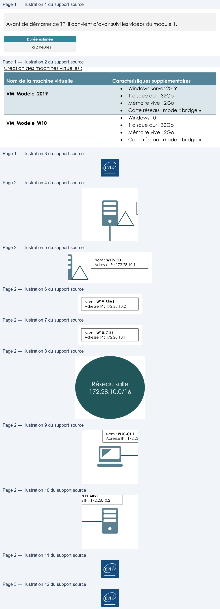

Transcription du document du Drive TSSR. La mise en forme est adaptée au Web ; les compléments IA du portail sont présentés séparément.
Services réseau en environnement Microsoft
TP 1 du Module 01 – Administration Windows
Avant de démarrer ce TP, il convient d’avoir suivi les vidéos du module 1.
Durée estimée
1 à 2 heures
Prérequis :
•
Copiez le fichier image ISO « Windows Server 2019 Standard » depuis le partage Réseau
vers votre lecteur local
Création des machines virtuelles :
Nom de la machine virtuelle
Caractéristiques supplémentaires
VM_Modele_2019
•
Windows Server 2019
•
1 disque dur : 32Go
•
Mémoire vive : 2Go
•
Carte réseau : mode « bridge »
•
Windows 10
VM_Modele_W10
•
1 disque dur : 32Go
•
Mémoire vive : 2Go
•
Carte réseau : mode « bridge »
Les VM seront stockées sous D:\Machines_Virtuelles\Modeles\Nom_de_la_VM
Les systèmes seront hébergés sur la totalité du disque. Au fur et à mesure de l’avancée du
cours, vous serez amené à ajouter des disques supplémentaires.
Une fois les systèmes installés :
•
Installez les VMware Tools.
•
Procédez à un sysprep des OS puis éteignez-les.
•
Créez un Folder nommé VM MODELES – A NE PAS DEMARRER dans le volet Library de
Workstation puis glissez-déplacez vos VM_Modele dedans.
Page 1/3
© ENI – Tous droits réservés
|
| Nom delamachine virtuelle Caracté ristiques supplé mentaires | |
| VM Modele 2019 _ _ | Windows Server 2019 • • 1 disque dur : 32Go • Mémoire vive : 2Go • Carte réseau : mode «bridge » |
| VM Modele W10 _ _ | Windows 10 • • 1 disque dur : 32Go • Mémoire vive : 2Go • Carte réseau : mode «bridge » |
Services réseau en environnement Microsoft
Ces VM seront utiles pour faire évoluer l’infrastructure au fur et à mesure des modules, mais
aussi en cas de perte éventuelle d’un serveur ou d’un client.
Ces modèles ne doivent pas être démarrés et devront être conservés durant l’ensemble
des modules du cours Service Réseau Microsoft.
Création de l’infrastructure :
•
Clonez VM_Modele_2019 en W19-CD1 ainsi qu’en W19-SRV1.
•
Clonez VM_Modele_W10 en W10-CLI1.
•
Les
dossiers
d’accueil
de
ces
VM
seront
situés
dans
D:\Machines_Virtuelles\Nom_De_La_VM
Configuration réseau :
•
Les machines auront un adressage IPv4 statique.
•
Le réseau à utiliser sera 172.28.10.0/16.
•
Les systèmes d’exploitation porteront le même nom que les VM.
Nom : W19-CD1
Adresse IP : 172.28.10.1
Nom : W19-SRV1
Adresse IP : 172.28.10.2
Nom : W10-CLI1
Adresse IP : 172.28.10.11
Réseau salle
172.28.10.0/16
Page 2/3
© ENI – Tous droits réservés
|
D
o@
=
Services réseau en environnement Microsoft
Rôle et fonctionnalités :
•
Installez sur le serveur le service Web IIS et l’outil de Sauvegarde Windows Server.
•
Pour tester le bon fonctionnement du service IIS, vérifiez l’accès à l’URL http://localhost
depuis le navigateur web du serveur (une image IIS doit s’afficher).
•
Autorisez l’utilisation du bureau à distance pour l’administration à distance du serveur et
du client.
Testez l’administration du serveur depuis W10-CLI1 :
•
Avec l’outil graphique Connexion Bureau à distance
•
Avec l’outil en ligne de commande mstsc (si besoin, afficher l’aide avec la
commande mstsc / ?)
Page 3/3
© ENI – Tous droits réservés
